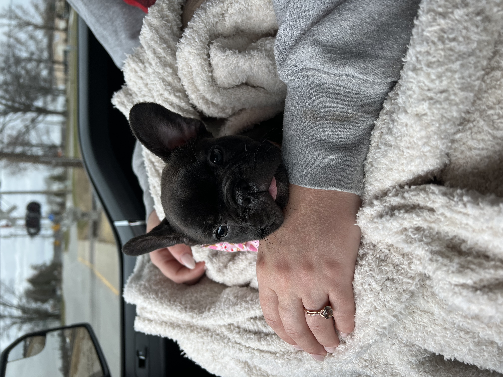

Many things have transpired since last fall. Here are some of the highlights
Marriage
This year I was able to marry my best friend. Getting to this point proved to be a bit challenging, but never the less we made it! It was a beautiful day filled with laughter. So many things went wrong but all we could do was laugh. It was an unforgetable night to say the least.
Home
The memory of moving into our house gives me a bit of whiplash. We decided to tear out carpet, move in, and host a bridal shower within 1 month of owning the house. I wouldnt have it any other way. It has been a dream living here and I look forward to a future where I can hopefully move my horses on property and have all my animals together. I dream of waking up in the morning and seeing my horses grazing peacefully in their pasture.
Animals
Dogs
On top of all the chaos of planning a wedding and moving we decided to add a little spice into our lives by growing our family by one more dog. Maple is our french bulldog puppy that we decided to throw into the mix of animals bringing our total to 2 dogs, and 2 horses. I always thought napping was a part of every puppies daily activities Maple made sure to prove me wrong. I never saw here willingly take a nap as a puppy. We love her none the less. She always puts a smile on my face regardless of her endless energy supply.

Horses
All animals have a place in my heart, but growing up I had an obsession with horses. I now have two that I love and enjoy. They are a lot of work, but well worth it.
Travel
This past year was full of travel for me. Travels thus far has consisted of rainforests, mountains, deserts, beaches, and beautiful landscapes. I love every second of traveling and I cant wait for the next trip.
Hawaii
Having the ability to travel to Hawaii for our honeymoon was incredible. We spent some time on Ohau and Kauai. Both incredibly beautiful in their own ways. Ohau is more of the big city feel. If you want a more relaxed trip to Ohau try the North Shore. Kauai on the other hand is very laid back and offers many beautiful hikes and landscapes.
South Carolina
I spent a few days in the spring on a road trip to SC. I spent a few days getting to catch up with friends and was able to experience the Grand-Prix Eventing Festival at Bruce's Field. For those that dont know this is an equestrian sport where you compete in 3 different events. Similar to a triatholon for humans. It is an incredible test of athleticism and skill.
We spent some time around the Tampa area. We spent some time exploring. We went to a beautiful spring, I met up with a friend at Disney, and we went to a sanctuary that housed many different animals including the majestic manatees.
Branson
We had were able to visit Branson twice this year. Once last winter and this summer. Branson is always a fun getaway. We saw the more amusement park side of Branson in the winter and then for the summer we were able to enjoy the scenery.